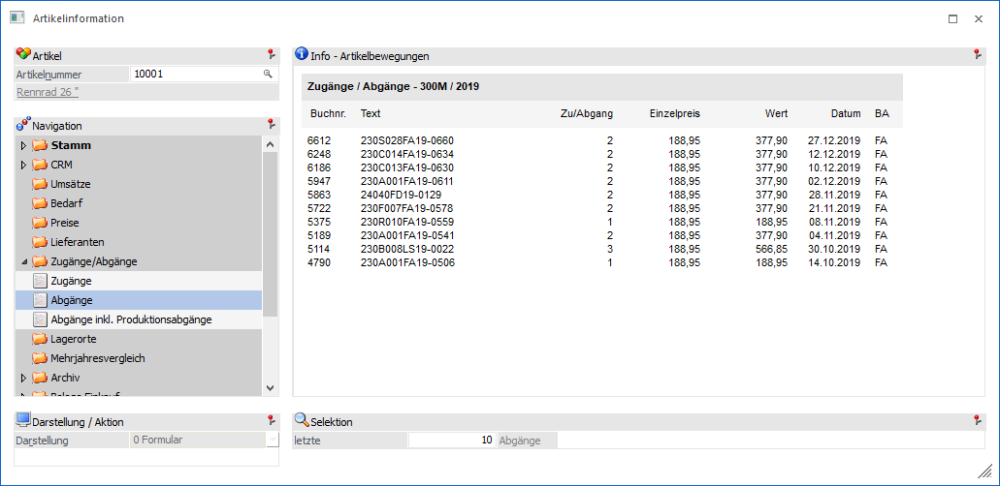
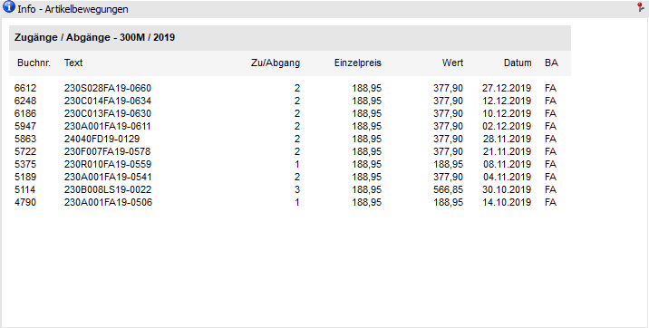
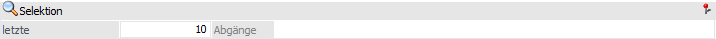

In der Ansicht "Abgänge" werden alle Lagerbewegungen (Artikeljournalzeilen) angezeigt, welche mit dem Buchungsschlüssel "V" erfasst wurden.

Die Ansicht "Abgänge" besteht aus den folgenden Info-Elementen:
ü Info - Artikelbewegung
ü Selektion
Info - Artikelbewegung

An dieser Stelle werden die Artikelbewegungen (Abgänge), gemäß der nachfolgenden Selektion, dargestellt.
Selektion

In diesem Bereich kann definiert werden viele Bewegungszeilen dargestellt werden sollen. Die gewählte Einstellung wird für die Ansichten "Abgänge" und "Abgänge inkl. Produktionsabgänge" übergreifend benutzerspezifisch gespeichert.
Ø letzte x Abgänge
An dieser Stelle kann definiert werden, wie viele Lagerjournalzeilen maximal angezeigt werden sollen.